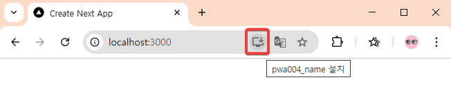
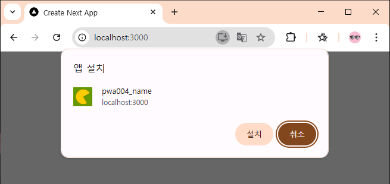
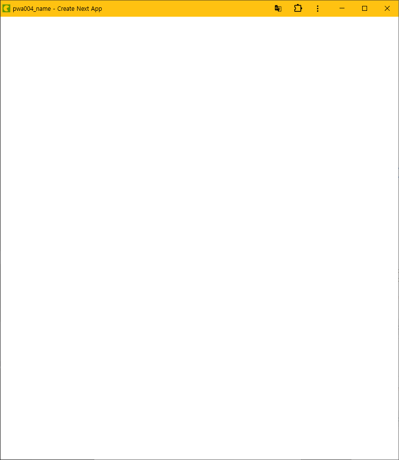
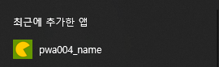
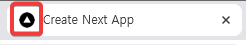

next.js를 pwa로
아래 그림처럼 주소창에 앱 설치 버튼을 나타내는 방법

프로젝트 생성
S E:\test\nextjstest> npx create-next-app
√ What is your project named? ... pwa004
√ Would you like to use TypeScript? ... No / Yes
√ Would you like to use ESLint? ... No / Yes
√ Would you like to use Tailwind CSS? ... No / Yes
√ Would you like your code inside a `src/` directory? ... No / Yes
√ Would you like to use App Router? (recommended) ... No / Yes
√ Would you like to use Turbopack for `next dev`? ... No / Yes
√ Would you like to customize the import alias (`@/*` by default)? ... No / Yes
Creating a new Next.js app in E:\test\nextjstest\pwa004.
Using npm.
Initializing project with template: app-tw
Installing dependencies:
- react
- react-dom
- next
Installing devDependencies:
- typescript
- @types/node
- @types/react
- @types/react-dom
- @tailwindcss/postcss
- tailwindcss
- eslint
- eslint-config-next
- @eslint/eslintrc
added 397 packages, and audited 398 packages in 39s
161 packages are looking for funding
run `npm fund` for details
found 0 vulnerabilities
Success! Created pwa004 at E:\test\nextjstest\pwa004
PS E:\test\nextjstest>
프로젝트 빌드
npm run build
npm run start

이렇게 주소창 옆에 앱 설치 버튼이 안 나온다.
패키지 설치
next-pwa 설치
npm install next-pwa
npm install --save-dev @types/next-pwa
next.config.ts 파일 수정
import type { NextConfig } from "next";
const nextConfig: NextConfig = {
/* config options here */
};
export default nextConfig;
파일을 아래처럼 수정한다.
import type { NextConfig } from "next";
import withPWA from "next-pwa";
const nextConfig: NextConfig = {
/* config options here */
};
const pwaConfig = withPWA({
...nextConfig,
dest: 'public'
});
export default pwaConfig;
음.. 그런데 이거 build할 때 warning 난다. 그래도 되기는 한다. 그래도 찝찝하다.
PS E:\test\nextjstest\pwa004> npm run build
> pwa004@0.1.0 build
> next build
⚠ Invalid next.config.ts options detected:
⚠ Unrecognized key(s) in object: '0', '1', '2', '3', '4', '5', '6', '7', '8', '9', '10', '11', '12', '13', '14', '15', '16', '17', '18', '19', '20', '21'
⚠ See more info here: https://nextjs.org/docs/messages/invalid-next-config
▲ Next.js 15.3.2
해결한 방법은 다음과 같다. 언젠가는 위 방법의 문제를 찾아내겠다.
const withPWA = require('next-pwa')({
dest: 'public',
});
/** @type {import('next').NextConfig} */
const nextConfig = {
// 기존 Next.js 설정
};
module.exports = withPWA(nextConfig);
manifest.json 파일 생성
public 폴더 안에 manifest.json 파일을 만들고 다음 내용을 넣는다.
{
"name": "pwa004_name",
"short_name": "pwa004_short_name",
"description": "pwa004_descript",
"theme_color": "#ffc211",
"background_color": "#ffffff",
"display": "standalone",
"scope": "/",
"start_url": "/",
"icons": [
{
"src": "/icons/images/icon-192.png",
"sizes": "192x192",
"type": "image/png"
},
{
"src": "/icons/images/icon-512.png",
"sizes": "512x512",
"type": "image/png"
}
]
}
layout.tsx 파일 수정
metadata에 다음 한 줄 추가
manifest: '/manifest.json'
전체 layout.tsx 파일은 다음과 같다.
import type { Metadata } from "next";
import "./globals.css";
export const metadata: Metadata = {
title: "Create Next App",
description: "Generated by create next app",
manifest: '/manifest.json'
};
export default function RootLayout({
children,
}: Readonly<{
children: React.ReactNode;
}>) {
return (
<html lang="en">
<body>
{children}
</body>
</html>
);
}
이미지 파일 복사
public 폴더 밑에
/icons/images/icon-192.png
/icons/images/icon-512.png
파일을 복사해 넣는다.
빌드하고 테스트
PS E:\test\nextjstest\pwa004> npm run build
PS E:\test\nextjstest\pwa004> npm run start



윈도우 키를 누르면 나오는 시작메뉴 맨 위에 최근에 추가한 앱에 표시된다.

브라우저의 저 이미지를 바꾸고 싶으면 favicon.ico 파일을 바꾼다.